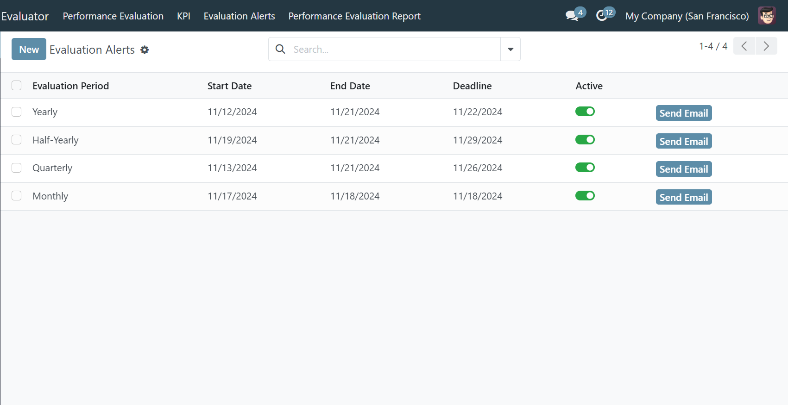
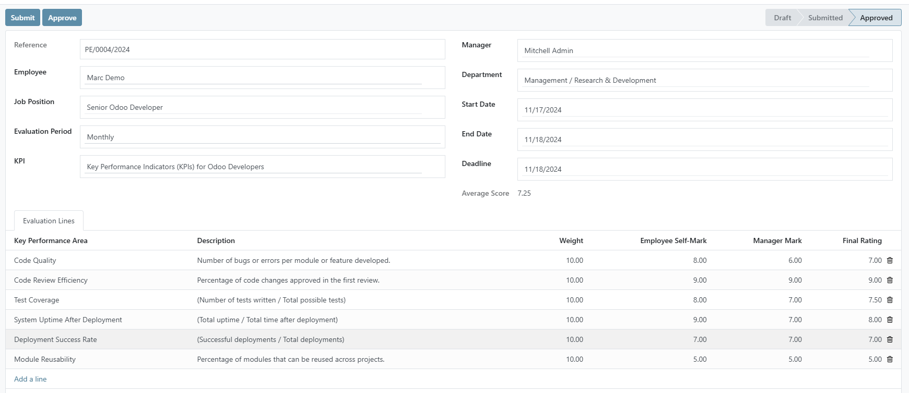
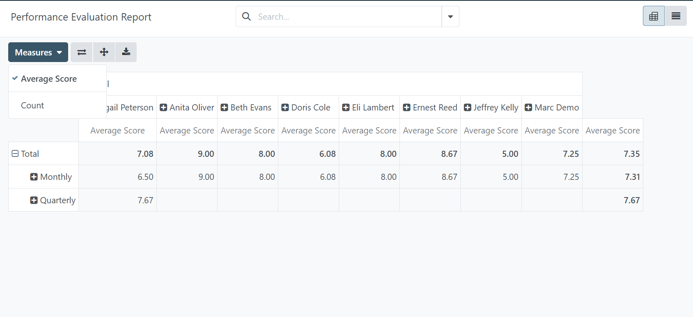

2. Evaluation Alerts
- Automatic Email Alerts: Notifications for the start and end of evaluation periods.
- Automatic Deactivation: Evaluation periods are automatically deactivated after the deadline.

3. Performance Evaluation
- Dynamic KPA Display: When a user selects a specific KPI for evaluation, the associated KPA(s) are dynamically displayed, ensuring that the evaluation focuses on the correct areas relevant to that specific KPI.
- Employees can self-evaluate based on KPIs.
- Managers can evaluate employees, with both evaluations contributing to the final score.
- Final scores are calculated as the average of employee and manager marks.
- Admin approval is required for final scores.

4. Performance Report
- Pivot Report: View performance data in a pivot table format, summarizing scores by employee or department.
- Average Score Calculation: Calculate and display average scores for employees or departments based on the evaluation period.
- Dynamic Filtering: Filter reports by evaluation period, employee, or department.

Email: amaretilaye1999@gmail.com
LinkedIn: Amare Tilaye